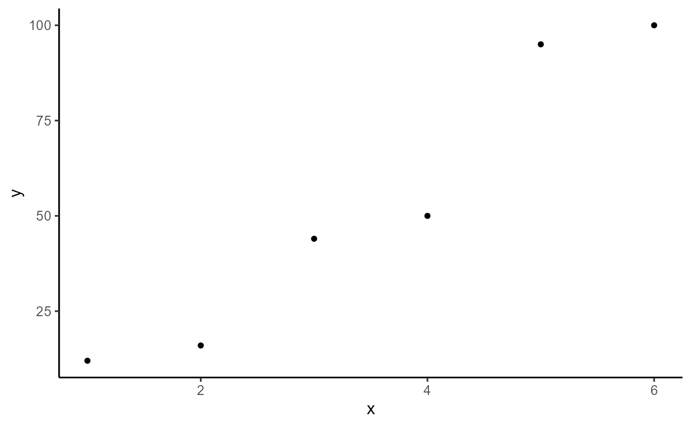
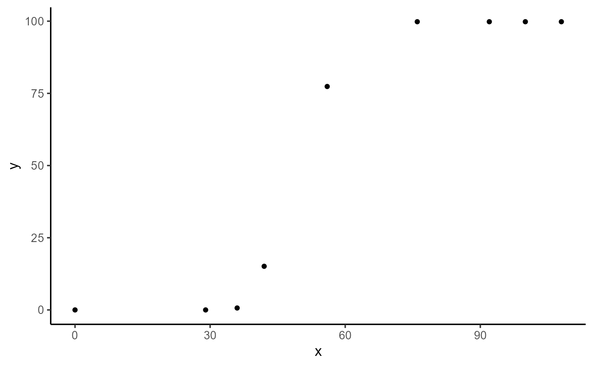
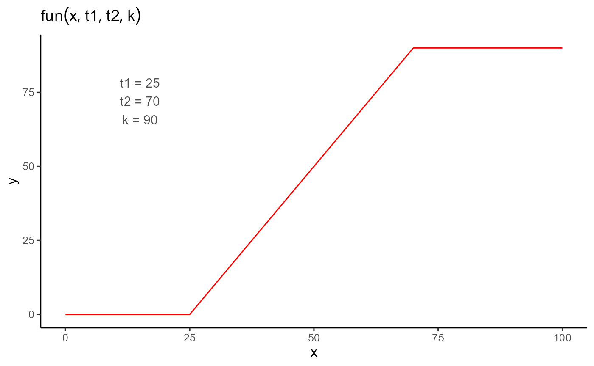
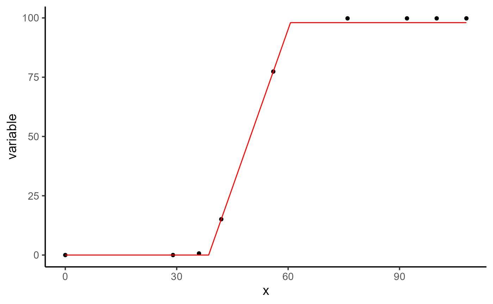

Getting started
The basic idea of this vignette is to illustrate to users how to use the flexFitR package. We’ll start with a very basic example: a simple linear regression. Although this example is not the primary focus of the package, it will serve to demonstrate its use.
1. Simple linear regression
In this example, we’ll work with a small dataset consisting of 6 observations, where X is the independent variable and Y is the dependent variable.
dt <- data.frame(X = 1:6, Y = c(12, 16, 44, 50, 95, 100))
plot(explorer(dt, X, Y), type = "xy")
First, we define an objective function. In this case, the function
fn_lm will represent the linear regression, where b is the
intercept and m is the slope of the regression.
fn_lm <- function(x, b, m) {
y <- b + m * x
return(y)
}The plot_fn function, which is integrated into the
package, allows us to plot any function with the parameters provided.
This is useful for visualizing the shape of the function before fitting
the model to the data.

To fit the model, we use the modeler function. In this
function, we pass x as the independent variable, y as the dependent
variable, and then a vector of parameters where we assign initial values
to our coefficient b and coefficient m.
mod <- dt |>
modeler(
x = X,
y = Y,
fn = "fn_lm",
parameters = c(b = -5, m = 10)
)
mod
#>
#> Call:
#> Y ~ fn_lm(X, b, m)
#>
#> Residuals (`Standardized`):
#> Min. 1st Qu. Median Mean 3rd Qu. Max.
#> -1.18875 -0.57369 -0.03282 0.00000 0.58494 1.21753
#>
#> Optimization Results `head()`:
#> uid b m sse
#> 1 -15.5 19.5 449
#>
#> Metrics:
#> Groups Timing Convergence Iterations
#> 1 0.189 secs 100% 259 (id)Once the model is fitted, we can examine the output, extract the estimated parameters, make some plots, and predict new x values.
a <- plot(mod, color = "blue", title = "Raw data")
b <- plot(mod, type = 4, n_points = 200, color = "black")
ggarrange(a, b)
In order to get the coefficients with their variance-covariance
matrix we make use of the coef and vcov
function, which only takes the model object as an argument.
coef(mod)
#> # A tibble: 2 × 7
#> uid fn_name coefficient solution std.error `t value` `Pr(>|t|)`
#> <dbl> <chr> <chr> <dbl> <dbl> <dbl> <dbl>
#> 1 1 fn_lm b -15.5 9.86 -1.57 0.192
#> 2 1 fn_lm m 19.5 2.53 7.71 0.00152
vcov(mod)
#> $`1`
#> b m
#> b 97.21937 -22.435238
#> m -22.43524 6.410068
#> attr(,"fn_name")
#> [1] "fn_lm"Finally, we can make predictions using the predict function, which takes the fitted model as an object and X as the value for which we want to make the prediction.
predict(mod, x = 4.5)
#> # A tibble: 1 × 5
#> uid fn_name x_new predicted.value std.error
#> <dbl> <chr> <dbl> <dbl> <dbl>
#> 1 1 fn_lm 4.5 72.3 5.01We can compare this with the lm function in R, which will give results similar to those obtained with our package.
Comparison with lm
mo <- lm(Y ~ X, data = dt)
summary(mo)$coefficients
#> Estimate Std. Error t value Pr(>|t|)
#> (Intercept) -15.46667 9.859988 -1.568629 0.191812151
#> X 19.51429 2.531811 7.707639 0.001524882
vcov(mo)
#> (Intercept) X
#> (Intercept) 97.21937 -22.435238
#> X -22.43524 6.410068
predict(mo, newdata = data.frame(X = 4.5), se.fit = TRUE)
#> $fit
#> 1
#> 72.34762
#>
#> $se.fit
#> [1] 5.010599
#>
#> $df
#> [1] 4
#>
#> $residual.scale
#> [1] 10.59133While the previous example was fairly simple, we can consider a more
complex scenario where we need to fit not just one function, but
hundreds of functions for several groups. This can be achieved using the
grp argument in the modeler function.
Additionally, we can parallelize these processes by setting the
parallel argument to TRUE and defining the
number of cores to use.
It’s important to note that depending on the functions defined by the user, some parameters may need to be constrained, such as being required to be greater than or less than zero. In other cases, certain parameters might need to be fixed at known values. In these more complex situations, where we have many curves to fit and are working with complex functions—whether non linear regressions with specific parameter constraints or cases where some parameters are fixed for each group—modeler offers extensive flexibility.
2. Piece-wise regression
The following example, although still simple, represents a slightly
more complex function with a greater number of parameters. In this case,
we have a piece-wise regression, parameterized by t1,
t2, and k, and defined by the following
expression:
fun <- function(t, t1 = 45, t2 = 80, k = 0.9) {
if (t < t1) {
y <- 0
} else if (t >= t1 && t <= t2) {
y <- k / (t2 - t1) * (t - t1)
} else {
y <- k
}
return(y)
}Before fitting the model, let’s take a look at the example dataset.
dt <- data.frame(
time = c(0, 29, 36, 42, 56, 76, 92, 100, 108),
variable = c(0, 0, 0.67, 15.11, 77.38, 99.81, 99.81, 99.81, 99.81)
)
plot(explorer(dt, time, variable), type = "xy")
We can make a plot of the piecewise function and then fit the model
using the modeler function.

mod_1 <- dt |>
modeler(
x = time,
y = variable,
fn = "fun",
parameters = c(t1 = 45, t2 = 80, k = 90)
)
mod_1
#>
#> Call:
#> variable ~ fun(time, t1, t2, k)
#>
#> Residuals (`Standardized`):
#> Min. 1st Qu. Median Mean 3rd Qu. Max.
#> 0.0000 0.0000 0.0000 0.2722 0.0000 2.4495
#>
#> Optimization Results `head()`:
#> uid t1 t2 k sse
#> 1 38.6 61 99.8 0.449
#>
#> Metrics:
#> Groups Timing Convergence Iterations
#> 1 0.1779 secs 100% 511 (id)After fitting the model, we can examine the results, plot the fitted curve, extract the coefficients and their associated p-values, obtain the variance-covariance matrix, and make predictions for unknown values of x.
plot(mod_1)
# Coefficients
coef(mod_1)
#> # A tibble: 3 × 7
#> uid fn_name coefficient solution std.error `t value` `Pr(>|t|)`
#> <dbl> <chr> <chr> <dbl> <dbl> <dbl> <dbl>
#> 1 1 fun t1 38.6 0.0779 496. 4.54e-15
#> 2 1 fun t2 61.0 0.0918 665. 7.82e-16
#> 3 1 fun k 99.8 0.137 730. 4.47e-16
# Variance-Covariance Matrix
vcov(mod_1)
#> $`1`
#> t1 t2 k
#> t1 6.061705e-03 -0.002940001 1.877072e-07
#> t2 -2.940001e-03 0.008431400 4.204939e-03
#> k 1.877072e-07 0.004204939 1.870426e-02
#> attr(,"fn_name")
#> [1] "fun"
# Making predictions
predict(mod_1, x = 45)
#> # A tibble: 1 × 5
#> uid fn_name x_new predicted.value std.error
#> <dbl> <chr> <dbl> <dbl> <dbl>
#> 1 1 fun 45 28.5 0.223Finally, we illustrate how to provide different initial values to the function when dealing with multiple groups, and we also show how to fix some parameters of the objective function.
Providing Initial values
In this example, we don’t have a grouping variable. However, by
default, the function assigns a unique identifier (uid) to
the dataset. Because of this, we need to specify uid = 1
for the initial values and fixed parameters. If there is only one group,
you only need to modify the parameters argument accordingly. This
approach is primarily for illustrative purposes.
init <- data.frame(uid = 1, t1 = 20, t2 = 30, k = 0.8)
mod_2 <- dt |>
modeler(
x = time,
y = variable,
fn = "fun",
parameters = init
)
mod_2
#>
#> Call:
#> variable ~ fun(time, t1, t2, k)
#>
#> Residuals (`Standardized`):
#> Min. 1st Qu. Median Mean 3rd Qu. Max.
#> 0.0000 0.0000 0.0000 0.2722 0.0000 2.4495
#>
#> Optimization Results `head()`:
#> uid t1 t2 k sse
#> 1 38.6 61 99.8 0.449
#>
#> Metrics:
#> Groups Timing Convergence Iterations
#> 1 0.2632 secs 100% 567 (id)
coef(mod_2)
#> # A tibble: 3 × 7
#> uid fn_name coefficient solution std.error `t value` `Pr(>|t|)`
#> <dbl> <chr> <chr> <dbl> <dbl> <dbl> <dbl>
#> 1 1 fun t1 38.6 0.0779 496. 4.54e-15
#> 2 1 fun t2 61.0 0.0918 665. 7.82e-16
#> 3 1 fun k 99.8 0.137 730. 4.47e-16Fixing parameters
fix <- data.frame(uid = 1, k = 98)
mod_3 <- dt |>
modeler(
x = time,
y = variable,
fn = "fun",
parameters = c(t1 = 45, t2 = 80, k = 90),
fixed_params = fix
)
mod_3
#>
#> Call:
#> variable ~ fun(time, t1, t2, k)
#>
#> Residuals (`Standardized`):
#> Min. 1st Qu. Median Mean 3rd Qu. Max.
#> 0.0000 0.0000 0.4815 0.6316 1.3008 1.3008
#>
#> Optimization Results `head()`:
#> uid t1 t2 sse k
#> 1 38.6 60.6 13.6 98
#>
#> Metrics:
#> Groups Timing Convergence Iterations
#> 1 0.1705 secs 100% 321 (id)
coef(mod_3)
#> # A tibble: 2 × 7
#> uid fn_name coefficient solution std.error `t value` `Pr(>|t|)`
#> <dbl> <chr> <chr> <dbl> <dbl> <dbl> <dbl>
#> 1 1 fun t1 38.6 0.396 97.5 3.15e-12
#> 2 1 fun t2 60.6 0.429 141. 2.34e-13
plot(mod_3)
performance(mod_1, mod_2, mod_3)
#> fn_name uid df nobs p logLik AIC AICc BIC Sigma SSE MAE MSE RMSE R2
#> 1 fun_1 1 4 9 3 0.72 6.56 16.56 7.35 0.27 0.45 0.07 0.05 0.22 1
#> 2 fun_2 1 4 9 3 0.72 6.56 16.56 7.35 0.27 0.45 0.07 0.05 0.22 1
#> 3 fun_3 1 3 9 2 -14.61 35.23 40.03 35.82 1.39 13.55 0.88 1.51 1.23 1This vignette provided a basic introduction to using the flexFitR package, starting with simple examples such as linear regression and piecewise regression. The goal was to demonstrate the fundamental features and flexibility of the package. However, more complex situations can arise when working with high-throughput phenotypic (HTP) data, which involve multiple groups, parameter constraints, and advanced modeling scenarios. These more complex situations are illustrated in the other vignettes, which use real HTP data to showcase the full capabilities of the flexFitR package.